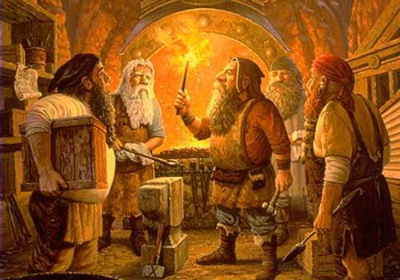
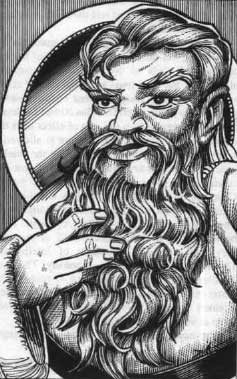
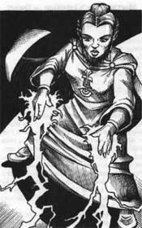
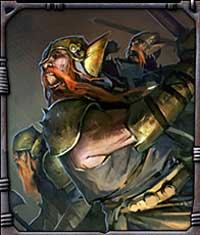
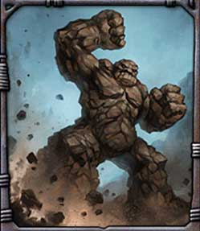

ORISONS
DI SRODAN
Least Stoneblow
| Sfera di riferimento |
Combat |
| Range |
12 metri |
| Duration |
Istantanea |
| Area of Effect |
Una creatura |
| Components |
V, S |
| Casting Time |
6 |
| Saving Throw |
None |
Quando il chierico lancia questa magia dalle sue mani parte un piccolo sasso con
il quale il chierico può provare a colpire una vittima designata che si trovi
entro 12 metri di distanza. Il chierico effettuerà quindi un normale tiro per
colpire con la proprio Thac0 naturale senza applicare l'eventuale modificatore
della destrezza. Se il chierico colpisce, la vittima subisce 1d3 danni da botta. Si noti che,
essendo dalla magia richiamato solo un normale sasso, il danno provocato sarà
considerato un comune
danno da botta.
Minimum
Absorbtion
| Sfera di riferimento |
Protection |
| Range |
12 metri |
| Duration |
2 rounds |
| Area of Effect |
Una creatura |
| Components |
V, S |
| Casting Time |
4 |
| Saving Throw |
None |
Questa magia dona una
riduzione ogni volta che si subisce un danno fisico (botta, taglio o
penetrazione) sia di natura magica che normale pari ad 1 punto danno. Questa
protezione non difende dagli effetti di tali attacchi (ad es. il veleno od il
risucchio di energia), inoltre, nessun danno di tipologia diversa (si pensi ai
danni da fuoco o da calore) è assorbito dall'incantesimo.
1° LIVELLO DI POTERE
|
Body Invigorate |
Necromancy |
|
|
| Sphere : |
Healing |
| Range : |
Tocco |
| Components : |
V, S |
| Duration : |
Speciale |
| Casting Time : |
1 round |
| Area of Effect : |
1 creatura |
| Saving Throw : |
None |
Attraverso questo
incantesimo il chierico di Srodan invigorisce il fisico di chi la riceve al fine
di permettere una più veloce guarigione delle ferite. In particolare la magia
amplifica gli effetti rigenerativi del corpo del ricevente il quale rigenererà,
quindi, 1 punto ferita perso alla fine di ogni ora di durata della magia. La
durata dell'incantesimo dipende dal punteggio di costituzione posseduto dal
ricevente e si può calcolare consultando il seguente schema:
Fino ad 11 di costituzione: 2 ore
Da 12 a 14 di costituzione: 3 ore
15 di costituzione: 4 ore
16 di costituzione: 5 ore
17 di costituzione: 6 ore
18 di costituzione: 7 ore
19 o + di costituzione: 8 ore
Si noti che sulle creature mostruose che non dispongono di un punteggio di
costituzione la magia durerà 1 ora per dado vita pieno fino ad un massimo di 8
ore per creature di 8 o + dadi vita. Questa cure possono considerarsi a tutti
gli effetti come una sorta di rigenerazione per tale motivo possono essere
attribuite alla cura dei colpi critici ed alla cura di danni prodotti
dall'acido. Se la magia è utilizzata su una creatura che si trova in stato
comatoso chi le riceve uscirà dal coma dopo che è trascorsa 1 ora dal lancio
della stessa (come se avesse ricevuto una qualsiasi cura magica) e la magia,
quindi, terminerà immediatamente i suoi effetti.
|
Dwarven Sentinel |
Necromancy |
|
|
| Sphere : |
Guardian |
| Range : |
Tocco |
| Components : |
V, S |
| Duration : |
Fino a 12 ore |
| Casting Time : |
1 round |
| Area of Effect : |
1 Nano del Massiccio |
| Saving Throw : |
None |
Questa magia può
essere lanciata solo sui Nani del Massiccio. Chi riceve questa magia può
letteralmente addormentarsi e riposare in piedi continuando ad indossare il
proprio equipaggiamento purché non risulti in alcun caso ingombrato per il peso
trasportato. In particolare, il nano resterà in piedi e con gli occhi aperti e
non dovrà levarsi le pesanti corazze indossate (anche qualora non possa
normalmente indossarle per periodi di tempo prolungati) sembrando a tutti gli
effetti sveglio. In realtà, però, il nano riposerà come se stesse dormendo ad
occhi aperti continuando però ad essere cosciente di ciò che accade nei suoi
dintorni. Tuttavia, il nano non potrà muoversi od influenzare ciò che lo
circonda più di quanto un comune uomo possa influenzare ciò che gli sta attorno
mentre dorme. Essendo, quindi, consapevole di ciò che accade in ogni momento il
nano potrà decidere di svegliarsi e muoversi facendo immediatamente terminare la
magia anche prima della sua durata massima dovendo, però, applicare in ogni caso
tutte le normali penalità possedute da chi si sveglia all'improvviso dopo
essersi addormentato.
|
Gem of Prayer
Storing |
Enchantment |
|
|
| Sphere : |
Elemental |
| Range : |
Tocco |
| Components : |
V, S, M |
| Duration : |
Speciale |
| Casting Time : |
1 day |
| Area of Effect : |
1 gemma |
| Saving Throw : |
None |
Attraverso questo
incantesimo il chierico di Srodan può incantare una gemma in modo tale da
permetterle di contenere un proprio incantesimo clericale. In particolare la
gemma potrà contenere un unico incantesimo il cui livello di potere varia a
seconda del valore della gemma secondo questo schema: una gemma dal valore di
almeno 50 monete d'oro potrà contenere una magia del primo livello di potere;
una gemma dal valore di almeno 150 monete d'oro potrà contenere fino ad una
magia del secondo livello di potere; una gemma dal valore di almeno 500 monete
d'oro potrà contenere fino ad una magia del terzo livello di potere. Ogni volta
che il chierico incanta una gemma deve tirare 1d20, se il risultato è 1 la gemma
non avrà retto il potere magico divino sgretolandosi e distruggendosi
definitivamente. Se il tiro è superiore la magia sarà lanciata con successo ed
il chierico potrà determinare quale incantesimo conservare nella gemma, senza
utilizzare eventuali componenti materiali od energia del simbolo sacro. Non
possono essere caricate nella gemma magie aventi casting time superiore ad un
round. Per poter utilizzare, quindi, la gemma incantata e caricata il chierico
dovrà indossarla sul proprio corpo incastonata in qualsiasi oggetto purché la
stessa risulti visibile e non coperta o rinchiusa in alcun modo. In un qualsiasi
round il chierico potrà lanciare la magia caricata senza spendere alcun punto
preghiera (si noti che la magia caricata nella gemma non sarà considerata ai
fini del numero massimo di magie che il chierico può memorizzare al giorno). Una
volta incantata la gemma conserverà il potere sacro fino a che non sia
utilizzata, sia distrutta oppure questa magia sia dissipata. Per utilizzare il
potere clericale conservato nella gemma il chierico non dovrà impugnarla essendo
sufficiente che la stessa sia indossata in modo visibile. Liberare il potere
della gemma richiede, però, un certo tempo e per tale motivo la magia contenuta
sarà lanciata in ogni caso come se avesse casting time pari ad un round. Il
chierico, inoltre, dovrà disporre ed utilizzare al momento del lancio dei
componenti materiali necessari nonché dei punti potere del sacro cristallo
richiesti. Una volta utilizzata, la gemma tornerà normale ma potrà essere
nuovamente incantata con questo incantesimo. Ogni chierico di Srodan può
mantenere incantata una sola gemma di questo tipo. Qualora incanti una nuova
gemma prima di aver utilizzato la precedente quest'ultima perderà
automaticamente ogni potere. Si noti, infine, che solo il chierico di Srodan che
ha incantato la gemma potrà utilizzarla in questo modo.
|
Silverbeard |
Alteration |
|
|
| Sphere : |
Protection |
| Range : |
0 |
| Components : |
V, S, M |
| Duration : |
1 turno + 1 round
per livello |
| Casting Time : |
4 |
| Area of Effect : |
The Caster |
| Saving Throw : |
None |
|
 |
Quando il
chierico di Srodan lancia questa magia i suoi capelli e la propria folta
barba diventano color argento e mantenendo inalterata la loro morbidezza
assumono la resistenza di tale metallo. Per questo motivo, proteggendo la
barba ed i capelli così rinforzati la testa, il collo e la parte alta del
busto del nano da eventuali attacchi, la classe armatura di quest'ultimo
migliorerà per la durata della magia di un punto (che sarà calcolato come
ultimo punto colpito dopo la corazza in modo tale che i colpi che non
feriranno il nano proprio per questo punto danneggeranno in ogni caso la
corazza ma come se il nano non fosse stato colpito). Si noti che questa
magia non può essere lanciata qualora il nano, per qualsiasi motivo, non
disponga di una folta barba o dei capelli. Il componente materiale di questo
incantesimo è il simbolo sacro del chierico ed una manciata di fine polvere
d'argento dal costo di 2 g.p. e dal peso di 1/10 di libbra che va spolverata sulla
barba e sui capelli all'atto del lancio dell'incantesimo. |
|
Weapon of Adamantium |
Alteration |
|
|
| Sphere : |
Combat |
| Range : |
Tocco |
| Components : |
V, S, M |
| Duration : |
3 turni per livello |
| Casting Time : |
1 round |
| Area of Effect : |
1 arma di acciaio o
metallo |
| Saving Throw : |
None |
Questo incantesimo
può essere utilizzato su qualsiasi arma di acciaio o metallo che non sia
forgiata in materiali speciali, che non sia magica od altrimenti incantata,
fatta eccezione per gli incantamenti generali della scuola di incantamento
(incantamento magico +1 ecc...) che sono gli unici ad essere compatibili con
questa magia. L'arma incantata in questo modo assume tutte le caratteristiche
dell'Adamantium per la un'ora. In particolare oltre ad ottenere un bonus di +2
ai tiri salvezza contro rottura, le armi di Adamantium possono essere
particolarmente letali in combattimento. Per tale motivo, quando chi le usa
colpisce un avversario con un tiro pari a 19 e 20 naturale costui riceverà un
bonus di +2 al punteggio sul dado base delle ferite (un bonus che quindi
migliora esclusivamente il tiro effettuato con il dado entro il risultato
massimo previsto dal dado stesso per cui se, ad esempio, colpendo con una one
handed bastard sword [dado di danno 1d8+1] si tira il dado e si ottiene un 7
questo risultato sarà
aumentato solo fino ad 8 che rappresenta il massimo risultato possibile sul dado
dell'arma, a nulla rilevando il bonus fisso di +1 presente sul dado). Si noti
che, Si noti che, se chi attacca con quest'arma possiede un bonus sul dado base
delle ferite
maggiore (ad esempio dipendente dalle
particolari condizioni di combattimento), sarà applicato unicamente il beneficio
maggiore non potendo questi bonus cumularsi tra loro. Il componente materiale è
una manciata di fine polvere d'Adamantium dal costo di 3 g.p. e dal peso di 1/10
di libbra che va cosparsa sull'arma che si vuole incantare.
2° LIVELLO DI POTERE
|
Adamantium Hardness |
Alteration |
|
|
| Sphere : |
Combat |
| Range : |
12 metri |
| Components : |
V, S, M |
| Duration : |
1 round + 1 round/2
livelli (max. 6 rounds) |
| Casting Time : |
1 round |
| Area of Effect : |
1 arma di
Adamantium |
| Saving Throw : |
None |
Questo incantesimo
può essere utilizzato su qualsiasi arma costruita in Adamantium o su un'arma
incantata con la magia Weapon of Adamantium (Srodan, 1° livello di potete speciale).
Una volta incantata per tutta la durata della magia l'arma provocherà danni
maggiori del solito. In particolare sarà influenzato il tiro del dado (o dei
dadi) di danno dell'arma senza che, però, possa essere superato il massimo
risultato che sarebbe stato possibile effettuare con il dado. Per tale motivo
chi utilizza quest'arma durante l'effetto di questo incantamento riceverà +2 al
punteggio sul dado base delle ferite (un bonus che quindi migliora
esclusivamente il tiro effettuato con il dado entro il risultato massimo
previsto dal dado stesso per cui se, ad esempio, colpendo con una one handed
bastard sword [dado di danno 1d8+1] si tira il dado e si ottiene un 7 questo
risultato sarà aumentato solo fino ad 8 che rappresenta il massimo risultato
possibile sul dado dell'arma, a nulla rilevando il bonus fisso di +1 presente
sul dado). Si noti che, se chi attacca con quest'arma durante l'effetto
dell'incantamento possiede un bonus maggiore dal punteggio base delle ferite (ad
esempio dipendente dalle particolari condizioni di combattimento), sarà
applicato unicamente il beneficio maggiore non potendo questi bonus cumularsi
tra loro. Inoltre, se chi utilizza tale arma colpisce un avversario durante
l'effetto dell'incantamento, con un tiro pari a 19 e 20 naturale il danno
prodotto dall'arma sarà automaticamente il massimo possibile senza che debba
effettuarsi alcun tiro di dado. Nel periodo di efficacia del potere, inoltre, l'adamantium
risulterà estremamente resistente e l'arma supererà automaticamente qualsiasi
tiro salvezza contro rottura mantenendo l'affilatura in caso si tratti di
un'arma dalla fattura speciale. Si noti che questo potere non si cumula con
quello dell'incantamento minore of Minor Hardness. L’incantesimo termina dopo
che sono trascorsi 1 round + 1 round ogni due livelli di lancio della magia (per
esempio 3 rounds a partire dal 4° livello, 4 rounds a partire dal 6°livello e
così via) fino ad un
massimo di 6 rounds al 10° livello.
Il componente materiale di questo incantesimo è il simbolo sacro del chierico.
|
Axe of Slashing |
Alteration |
|
|
| Sphere : |
Combat |
| Range : |
Tocco |
| Components : |
V, S, M |
| Duration : |
30 rounds |
| Casting Time : |
1 round |
| Area of Effect : |
1 ascia medium
o large |
| Saving Throw : |
None |
Questo incantesimo
può essere utilizzato su qualsiasi ascia di dimensioni medium o large che
produca danni da taglio e che non sia magica od altrimenti incantata, fatta
eccezione per gli incantamenti generali della scuola di incantamento
(incantamento magico +1 ecc...) che sono gli unici ad essere compatibili con
questa magia. Quando
l'arma così incantata è utilizzata in combattimento e chi la utilizza colpisce
una creatura effettuando con il proprio attacco un tiro per colpire naturale
pari a 18, 19 o 20, l'arma provocherà un profondo taglio in grado di produrre
un'emorragia alla vittima del colpo. Per tale motivo la vittima perderà per tre
rounds (ossia alla fine del round in corso ed alla fine dei due rounds
immediatamente successivi) 2 punti ferita per il dissanguamento (per un totale
di 6 punti ferita). Si tratta a tutti gli effetti di una emorragia maggiore che
continua anche durante il coma. Un'emorragia maggiore può essere fermata solo da
chi possiede la competenza healing ed abbia a disposizione 2 bendaggi superando
una prova nell'abilità oppure utilizzando,esclusivamente al fine di fermare
l'emorragia, una magia di cure light wounds od un'altra magia curativa che sia
in grado di far recuperare in un singolo round 5 o + punti ferita. Occorre
osservare che le creature che non hanno organi vitali (non morti, costruiti
ecc...), le creature che non posseggono un corpo di tipo animale (slimes, cubo
gelatinoso, piante carnivore, elementali, ecc...) e le creature che hanno un
potere rigenerativo in grado di rigenerare almeno 1 punto ferita al round (si
pensi ad un troll) sono immuni agli effetti di questo incantamento. Il
componente materiale di questo incantesimo è una piccola ascia d'argento in
miniatura sulla quale sono scolpite rune naniche dal peso di 1/2 libbra e dal
valore di 15 monete d'oro che si consuma al lancio della magia.
|
Defensive Runes |
Abjuration |
|
|
| Sphere : |
Protection |
| Range : |
0 |
| Components : |
V, S, M |
| Duration : |
5 rounds per livello |
| Casting Time : |
4 |
| Area of Effect : |
The Caster |
| Saving Throw : |
None |
 |
Quando il chierico
di Srodan lancia questa magia appaiono alcune rune naniche di pura luce dal
colore azzurro che ruotano attorno alla sua figura. In particolare, apparirà 1
runa + 1 runa ogni due livelli di lancio della magia (2 rune al 3° livello, 3
rune al 5° livello, ecc…) fino ad un massimo di 5 rune al 9° livello di lancio.
Le rune sono ben visibili al buio ma non sono assolutamente in grado di
illuminare. Se il chierico è attaccato, una sola runa si dirigerà verso ogni
singolo attacco fisico assorbendo fino ad 1-4+1 danni provocati dallo stesso per
poi svanire immediatamente. Il chierico, dunque, si ferirà eventualmente per i
danni ulteriori provocati dall'attacco. L'intervento della runa non impedirà
comunque che l'attacco colpisca il chierico che potrà, quindi, subire gli
eventuali effetti secondari dello stesso anche qualora la runa abbia assorbito
interamente il danno (si pensi ad es. al veleno od al risucchio di energia).
Qualora, invece, il chierico subisca danni ad area tutte le rune si attiveranno,
in ogni caso, per assorbire il danno provocato svanendo immediatamente dopo
l'intervento. Si noti che, utilizzando il medesimo criterio utilizzato dagli
anelli magici di protezione, i danni che non si sostanziano in aggressioni
fisiche esterne non possono essere assorbiti dalle rune (si pensi ad es. ad
incantesimi od a poteri che attaccano il fisico della vittima dall'interno come
Blood Burn o che producono danno ad area direttamente nel corpo della vittima
come Death Star). Se non sono utilizzate, le rune svaniranno comunque dopo che
siano trascorsi 5 rounds per livello di lancio. Il componente materiale di
questo incantesimo è il simbolo sacro del chierico ed uno Zaffiro d'Acqua dal valore di almeno 5 g.p. che si
consuma al lancio dell'incantesimo. |
|
Dwarven Fury |
Charm |
|
|
| Sphere : |
Combat |
| Range : |
0 |
| Components : |
V, S, M |
| Duration : |
1 round + 1 round/level |
| Casting Time : |
1 round |
| Area of Effect : |
The Caster |
| Saving Throw : |
None |
Quando
il chierico di Srodan lancia questa magia su se stesso, invoca la furia
combattiva ed il coraggio proprio della razza nanica. Per tale motivo, a partire
dal round successivo a quello di lancio e per tutta la durata della magia,
il chierico si infervorerà in
battaglia ogni volta che,
durante un round di combattimento, lo stesso effettuerà un attacco in corpo a
corpo contro un avversario appartenente ad una delle seguenti razze di umanoidi:
Kobold, Goblin, Hobgoblin, Orc, Gnoll, Bugbear, Tren, Ogre e Troll. In tale occasione, quindi, il
chierico riceverà un attacco extra alla fine del round in corso da effettuarsi
esclusivamente nei confronti della creatura precedentemente attaccata nel
medesimo round di combattimento. Il componente materiale è il simbolo sacro del
chierico.
|
Guardian Hammer |
Abjuration |
|
|
| Sphere : |
Wards |
| Range : |
Tocco |
| Components : |
V, S, M |
| Duration : |
Speciale |
| Casting Time : |
1 round |
| Area of Effect : |
Dwarven Hammer |
| Saving Throw : |
None |
 |
Con questa magia
il chierico di Srodan può incantare un Dwarven Hammer di comune metallo e
fattura che non sia magico né altrimenti incantato. L'incantesimo pone il
martello a guardia di una qualsiasi porta, portale, cancello od altro ingresso
il cui passaggio è possibile chiudere e che ha come dimensioni massime 3 metri
di diametro. Quando il chierico lancia questo incantesimo tocca
contemporaneamente il martello e la porta che
deve essere necessariamente chiusa, stabilendo, al contempo, una parola segreta. Lascerà,
quindi, il martello nelle immediate vicinanze della porta (entro 3 metri dalla
stessa). Qualora, dunque, una qualsiasi creatura
apra la porta senza pronunciare nel medesimo round la parola segreta scelta dal
chierico questa sarà attaccata dal martello a partire dal round successivo. Il
martello si animerà anche qualora una qualsiasi creature diversa dal
chierico provi a spostare il martello dalla sua posizione. Una
volta animatosi, il martello si sposterà verso il nemico volando ad 1,5 metri dal
suolo (non può alzarsi oltre tale quota) e lo attaccherà ripetutamente per 10 rounds. Il martello seguirà la vittima ad un fattore movimento pari a 12, fino
alla fine dell’incantesimo, fino a che l’inseguimento non può continuare (per
esempio l’avversario vola in alto o si teletrasporta), l’avversario muore od il
martello viene fisicamente distrutto.
Si noti che il martello considererà
suo nemico solo la prima creatura abbia aperto la porta od abbia provato a
spostarlo. Il martello attacca con una thac0 pari a
21 - il livello di lancio dell'incantesimo, effettuando 1 attacco al round se la
magia è stata lanciata dal 1° al 4° livello di lancio, 1 attacco ogni due round
se la magia è stata lanciata dal 5° all'8° livello di lancio, 2 attacchi al
round se la magia è stata lanciata dal 9° livello di lancio in poi. Il fattore
iniziativa del movimento del martello sarà pari a quello di una creatura di
taglia media mentre il fattore iniziativa d'attacco sarà pari a +4. Il martello
provoca per ogni colpo inferto 1d6 danni da botta, considerandosi a tutti gli
effetti un'arma magica +1 se la magia è stata lanciata dal 5° all'8° livello di
lancio (1d6+1 danni) ed un'arma magica +2 se la magia è stata lanciata dal 9°
livello di lancio in poi (1d6+2 danni). Il martello che ha una classe armatura
pari ad AC 4 e 5 punti ferita per livello di lancio dell’incantesimo (fino ad un
massimo di 50 punti ferita al 10° livello) può essere normalmente distrutto
da attacchi fisici e magici. Una volta lanciato l'incantesimo lo stesso
resterà attivo per 24 ore al termine delle quali, qualora il martello non si
sia animato, lo stesso potrà essere recuperato. Se il chierico, però, utilizza polvere
d'argento per un ammontare pari a 100 g.p. l'incantesimo perdurerà a tempo
indefinito fino a che lo stesso chierico non lo rimuova o la magia si attivi a
difesa della porta. Prima dello
scadere della sua durata il chierico può, rimuovendo il martello e
pronunciando la parola segreta, disattivare l'incantesimo facendolo
terminare definitivamente. Il componente materiale di questo incantesimo è un comune Dwarven Hammer che, qualora
si sia animato, si sgretolerà in polvere
al termine della durata dello stesso (se non sia stato precedentemente
distrutto). |
|
Hammer of Bashing |
Alteration |
|
|
| Sphere : |
Combat |
| Range : |
Tocco |
| Components : |
V, S, M |
| Duration : |
30 rounds |
| Casting Time : |
1 round |
| Area of Effect : |
1 martello medium
o large |
| Saving Throw : |
None |
Questo incantesimo
può essere utilizzato su qualsiasi martello che produca danni da botta e che non
sia magico od altrimenti incantato, fatta eccezione per gli incantamenti
generali della scuola di incantamento (incantamento magico +1 ecc...) che sono
gli unici ad essere compatibili
con questa magia. Quando l'arma così incantata è utilizzata in combattimento e
chi la utilizza colpisce una creatura effettuando con il proprio attacco un tiro
per colpire naturale pari a 18, 19 o 20, la botta sarà appesantita in modo tale
che la vittima del colpo dovrà superare un tiro salvezza contro raggio della
morte con una penalità di -1% per ogni danno inferto dall'attacco per non
restare incapacitata per 1d3+1 rounds (nei quali è ricompreso quello
dell'attacco). Si tenga presente che chi è incapacitato può continuare a
muoversi ed a compiere le sue azioni ma le sue capacità di azione sono ridotte.
Per questo motivo riceve una penalità di -2 a tutti i suoi tiri ed il 20% di non
riuscire a concentrarsi nel lancio delle magie, inoltre può muoversi solo alla
metà del suo fattore movimento. Se costretto ad effettuare un tiro (ad es. un
tiro salvezza) costui riceve una penalità di -2 (-10% ai tiri salvezza) su tutti
i tiri contro effetti che sarebbero stati più facili da evitare qualora costui
fosse stato in grado di muoversi normalmente. Gli avversari che lo attaccano,
infine, ricevono un bonus di +2 al tiro per colpire. Occorre osservare che le
creature che non hanno organi vitali (non morti, costruiti ecc...) e le creature
che non posseggono un corpo di tipo animale (slimes, cubo gelatinoso, piante
carnivore, elementali, ecc...) sono immuni agli effetti di questo incantamento.
Si noti, infine, che le creature di taglia gargantuan sono immuni agli effetti
di questo incantamento, mentre solo le armi da corpo a corpo di dimensioni large
incantate con questo incantamento possono provocare effetti contro contro
creature di taglia huge le quali, in ogni caso, ottengono un bonus di +2 al loro
tiro salvezza. Il
componente materiale di questo incantesimo è un piccolo martello d'argento in
miniatura sul quale sono scolpite rune naniche dal peso di 1/2 libbra e dal
valore di 15 monete d'oro che si consuma al lancio della magia.
|
Rockblow |
Conjuration |
|
|
| Sphere : |
Combat |
| Range : |
3 metri + 3 metri
per livello (max. 30 metri al 9° liv.) |
| Components : |
V, S, M |
| Duration : |
Istantanea |
| Casting Time : |
5 |
| Area of Effect : |
Una Creatura |
| Saving Throw : |
None |
Quando
il chierico lancia questa magia dalle sue mani parte un grosso sasso che
colpisce violentemente la vittima designata. La magia provoca 1d6 danni da botta
+1 danno ogni 2 livelli di lancio
della magia oltre il primo (1d6 al 1° e 2° livello, 1d6+1 dal 3° al 4° livello,
1d6+2 dal 5° al 6° livello e così via)
fino ad un massimo di 1d6+5 danni
all'11° livello di lancio. Si noti che
essendo richiamate dalla magia normali pietre il danno provocato sarà comune
danno da botta. Il componente materiale di questo incantesimo è il simbolo sacro
del chierico.
|
Srodan Battle Bless |
Alteration |
|
|
| Sphere : |
Combat |
| Range : |
12 metri |
| Components : |
V, S, M |
| Duration : |
3 rounds + 1 round
ogni 2 livelli |
| Casting Time : |
3 |
| Area of Effect : |
1 creatura |
| Saving Throw : |
None |
Attraverso questo
incantesimo il chierico di Srodan migliora le possibilità di colpire di chi lo riceve
nonché quelle di essere mancato dai propri avversari. Se nella normalità dei casi, indipendentemente dal
valore di classe armatura, un tiro naturale pari a 20 si considera
automaticamente colpito ed un tiro naturale pari ad 1 si considera
automaticamente mancato chi riceve questo incantesimo vedrà alterate tali
possibilità. In particolare, costui potrà considerare colpi automaticamente
andati a segno tiri per colpire con risultato naturale del dado pari a 19 e 20
se la magia è stata lanciata ad almeno il 3° livello di lancio, a 18, 19 e 20 se
la magia è stata lanciata ad almeno il 6° livello di lancio ed a 17, 18, 19 e 20
se la magia è stata lanciata ad almeno il 9° livello di lancio. Parimenti, le
creature che attaccano chi ottiene i benefici di questo incantesimo mancheranno
i loro colpi se effettuino tiri per colpire con risultato naturale del dado pari
a 1 e 2 se la magia è stata lanciata ad almeno il 3° livello di lancio, a 1, 2 e
3 se la magia è stata lanciata ad almeno il 6° livello di lancio ed a 1, 2, 3 e
4 se la magia è stata lanciata ad almeno il 9° livello di lancio. Gli effetti di
questa magia si applicheranno a tutte le forme di attacchi che richiedono un
tiro per colpire. Si noti che, in ogni caso, i risultati critici ed acritici
rimarranno rispettivamente applicati esclusivamente qualora siano effettuati
tiri naturali pari a 20 od a 1. La magia terminerà una volta trascorsi 3 rounds
+ 1 round ogni due livelli di lancio (3 rounds al 1° livello, 4 rounds dal 2° al
3° livello, 5 rounds dal 4° al 5° livello, e così via).
Il componente materiale di questo
incantesimo è il simbolo sacro del chierico.
3° LIVELLO DI POTERE
|
Armor
Absorption |
Abjuration |
|
|
| Sphere : |
Protection |
| Range : |
Tocco |
| Components : |
V, S, M |
| Duration : |
30 rounds |
| Casting Time : |
1 round |
| Area of Effect : |
Una corazza |
| Saving Throw : |
None |
Questo
incantesimo può essere utilizzato su qualsiasi corazza che non sia magica od
altrimenti incantata, fatta eccezione per gli incantamenti generali della scuola
di incantamento (incantamento magico +1 ecc...) che sono gli unici ad essere
compatibili con questa magia. Una volta incantata con questo incantesimo, per
tutta la sua durata, la corazza assorbirà, annullandolo, un certo ammontare dei
danni provocati da ogni attacco fisico (taglio, botta e perforazione) subito da
chi la indossa. L'ammontare di danno assorbito dipenderà dalla categoria della
corazza come indicato nel seguente schema:
Corazze di Tessuti: 1
danno assorbito ogni 5 danni subiti
(1 danno assorbito da 5 a 9 danni, 2 danni assorbiti da 10 a 14 danni, e così
via...).
Corazze Metalliche Snodate:
1 danno assorbito ogni 4 danni subiti (1
danno assorbito da 4 a 7 danni, 2 danni assorbiti da 8 a 11 danni, e così
via...).
Corazze Metalliche Rigide:1
danno assorbito ogni 3 danni subiti (1 danno assorbito da 3 a 5 danni, 2 danni
assorbiti da 6 a 8 danni, e così via...).
La corazza, però, si danneggerà regolarmente non influenzando tale riduzione la
resistenza della corazza. La corazza non fornirà alcuna protezione contro i
danni di natura diversa dai danni fisici (si pensi ad esempio ai danni
elementali). Il componente materiale di questo incantesimo è
il simbolo sacro del chierico ed un piccolo scudo in
miniatura forgiato con Adamantium dal peso di 1/2 libbra e dal costo di 25
monete d'oro.
|
Blessed
Craftsmanship |
Enchantment |
|
|
| Sphere : |
Creation |
| Range : |
Tocco |
| Components : |
V, S, M |
| Duration : |
Speciale |
| Casting Time : |
1 round |
| Area of Effect : |
One object |
| Saving Throw : |
None |
 |
Questa
magia può essere lanciata su un qualsiasi prodotto grezzo o materiale debba
essere utilizzato in fase di creazione per una delle seguenti competenze:
Blacksmithing, Weaponsmithing, Armorer, Special Armorer, Leatherworking, Gem
Cutting, Pottery, Stone Masonry, Weaving. L'artigiano che, quindi, si opererà
per trasformare il materiale in un oggetto manifatturiero riceverà un bonus di
+2 alla prova di costruzione da effettuarsi alla fine del periodo di
lavorazione. Questo bonus non si cumulerà con alcun altro possibile bonus alla
creazione donato all'artigiano tramite incantesimi (si applicherà di questi solo
il bonus maggiore). Si noti che perché l'incantesimo abbia effetto è necessario
che la magia sia utilizzata sul materiale prima dell'inizio della lavorazione.
Il componente materiale di
questo incantesimo è il simbolo sacro del chierico.
|
|
Might of Srodan |
Evocation (Lightning) |
|
|
| Sphere : |
Combat |
| Range : |
Tocco |
| Components : |
V, S, M |
| Duration : |
1 turno + 1 round
ogni due livelli |
| Casting Time : |
1 round |
| Area of Effect : |
One weapon |
| Saving Throw : |
None |
Attraverso questa magia il chierico di Srodan infonde in un'arma da corpo a
corpo il potere della divinità. L'arma così incantata viene circondata da un
fioco alone di luce bluastra. Quando, durante un combattimento, chi utilizza
quest'arma colpisce un nemico in corpo a corpo e tirando il dado per determinare
le ferite riportate ottiene un risultato naturale (determinato considerando solo
il dado senza alcun modificatore ivi compreso quello previsto sul dado dall'arma
stessa) che si posiziona nella metà inferiore dei risultati che è possibile
tirare con quel dado (arrotondando eventualmente per eccesso) una scarica
elettrica colpirà la vittima. Per fare alcuni esempi, quindi, se il dado di
danno dell'arma è 1d3 l'incantesimo si attiverà per tiri pari ad 1 e 2, se il
dado di danno dell'arma è 1d6 l'incantesimo si attiverà per tiri da 1 a 3, se il
dado di danno dell'arma è 1d8 l'incantesimo si attiverà per tiri da 1 a 4, se il
dado di danno dell'arma è 2d4 l'incantesimo si attiverà per tiri da 1 a 5. La
vittima, quindi, oltre a subire i normali danni del colpo subirà 1d6 danni da
elettricità magica +1 danno ogni 3 livelli di lancio della magia (1d6 danni al
1° e 2° livello, 1d6+1 danni dal 3° al 5° livello, 1d6+2 danni dal 6° all'8°
livello) fino ad un massimo di 1d6+4 danni al 12° livello di lancio. La magia
terminerà dopo che è trascorso 1 turno + 1 round ogni due livelli di lancio (ad
es. dopo 12 rounds se lanciata al 4° o 5° livello, dopo 13 rounds se lanciata al
6° o 7° livello, e così via).
Il componente materiale di questo
incantesimo è il simbolo sacro del chierico.
|
Rain of Stones |
Conjuration |
|
|
| Sphere : |
Combat |
| Range : |
9 metri + 3 metri
per livello (max. 39 metri al 10° liv.) |
| Components : |
V, S, M |
| Duration : |
Istantanea |
| Casting Time : |
5 |
| Area of Effect : |
Sfera di 9 metri di
diametro |
| Saving Throw : |
1/2 |
 |
Questa magia
può essere lanciata solo in zone con soffitto alto almeno 3 metri. Quando il
chierico lancia questa magia nell'area di effetto è richiamata una pioggia
di pietre che colpiscono tutti coloro si trovano al suo interno. La magia
provoca 1d10 danni da botta + 1 danno per livello di lancio dell'incantesimo
fino ad un massimo di 1d10 + 10 danni al decimo livello di lancio. Ogni
creatura vittima dell'incantesimo può, superando un tiro salvezza su
riflessi, dimezzare i danni subiti. Si noti che
essendo richiamate dalla magia normali pietre il danno provocato sarà comune
danno da botta. Il componente materiale di questo incantesimo è una gemma del
tipo granato dal valore minimo di 25 g.p. che consuma al lancio della magia. |
|
Srodan Lightning |
Evocation (Lightning) |
|
|
| Sphere : |
Combat |
| Range : |
15 metri |
| Components : |
V, S, M |
| Duration : |
Istantanea |
| Casting Time : |
4 |
| Area of Effect : |
Una o due creature |
| Saving Throw : |
1/2 |
|
 |
Quando il
chierico di Srodan lancia questa magia dalle sue mani partono due fulmini in
grado di colpire bersagli fino a 12 metri di distanza. I fulmini possono
essere lanciati su un'unica creatura o divisi su due diverse creature purché
entrambe si trovino nell'arco di vista frontale del chierico. La violenta
scarica elettrica di ogni fulmine provocherà alla vittima
1d8 danni da elettricità magica +1
danno ogni 2 livelli di lancio della magia oltre il quinto (1d8 danni al 5°
e 6° livello, 1d8+1 danni dal 7° all'8° livello, 1d8+2 danni dal 9° al 10°
livello) fino ad un massimo di 1d8+5 danni al 15° livello di lancio. Danni
dimezzabili superando un tiro salvezza contro incantesimi (sarà necessario
un unico tiro salvezza per dimezzare il danno totale anche in caso i due
fulmini siano lanciati su un'unica vittima).
Il componente materiale di questo
incantesimo è il simbolo sacro del chierico. |
|
Tunnel Door |
Conjuration |
|
|
| Sphere : |
Creation |
| Range : |
Tocco |
| Components : |
V, S, M |
| Duration : |
1 ora per livello |
| Casting Time : |
1 round |
| Area of Effect : |
Speciale |
| Saving Throw : |
None |
Il chierico
di Srodan può lanciare questa magia in un qualsiasi tunnel, cunicolo o dungeon
che abbia pareti di pietra, terra compatta o roccia e che misuri un diametro che
va da 2 a 3 metri. Quando il chierico lancia questo incantesimo toccando il
suolo del tunnel alla fine del round apparirà una massiccia porta in legno
rinforzata con relativa muratura aderente al cunicolo in grado di chiudere il
cunicolo perfettamente. Contemporaneamente apparirà nelle mani del chierico una
grossa chiave in grado di aprire e chiudere la serratura della porta. La porta
appare sempre chiusa a chiave. Si tratta a tutti gli effetti di una comune porta
la cui serratura può essere scassinata da un ladro senza applicazione di alcun
modificatore. La porta può essere anche abbattuta considerandosi una porta in
legno rinforzata in ferro. Se la porta è attaccata fisicamente si consideri che
la stessa possiede AC 4 e 50 punti struttura. Qualora la porta sia fisicamente
distrutta e comunque al termine della durata della magia la stessa svanirà, come
anche la relativa chiave, in
una nuvola di polvere. Il componente materiale di
questo incantesimo è il simbolo sacro del chierico ed una maniglia d'argento riccamente adornata dal valore di 10 g.p.
e dal peso di 1/2 libbra che si
consuma al lancio dell'incantesimo.
4° LIVELLO DI
POTERE
|
Attacks Storm of
Srodan |
Alteration |
|
|
| Sphere : |
Combat |
| Range : |
0 |
| Components : |
V, S |
| Duration : |
3 rounds |
| Casting Time : |
1 round |
| Area of Effect : |
Sfera di 12 metri di
raggio |
| Saving Throw : |
None |
|
 |
Quando il chierico
di Srodan lancia questa magia fino ad un Nano del Massiccio ogni due livelli di
lancio della magia (ad es. 3 nani al 6° e 7° livello, 4 nani all'8° e 9°
livello, e così via) tra i quali deve ricomprendersi il chierico se desidera
riceverne gli effetti, presenti nell'area d'effetto e che utilizzino per
combattere una qualsiasi delle armi sacre a Srodan (Martelli: Dwarven Hammer, War Hammer, Mallet,
Hammer, Sledge. Asce: Shoka, One Handed Battle Axe,
Two Handed Battle Axe, Throwing Axe, Hatchet, Hand Axe.
Altre Armi: Bastone da Guerra) effettueranno per tutta la durata della magia un
ulteriore attacco al round in corpo a corpo da effettuarsi a fine round.
Eventuali altre magie in grado di velocizzare gli attacchi (si pensi ad Haste)
non cumuleranno i propri effetti con quelli di questa magia. Una magia di Slow
lanciata su chi ottiene i benefici di questo incantesimo non sortirà altro
effetto se non annullare automaticamente la magia clericale (stesso risultato si
otterrà se questa magia è lanciata su chi si trova sotto gli effetti di una
magia di Slow). |
|
Body of Granite |
Alteration |
|
|
| Sphere : |
Protection |
| Range : |
0 |
| Components : |
V, S, M |
| Duration : |
1 round per livello |
| Casting Time : |
6 |
| Area of Effect : |
The Caster |
| Saving Throw : |
None |
Quando il chierico
lancia questo incantesimo il suo corpo assume le sembianze della nuda roccia.
Nonostante il corpo del chierico appaia della consistenza della roccia,
però, lo stesso mantiene l'originaria flessibilità e capacità di movimento. Per
tutta la durata della magia il chierico acquisisce una resistenza ai danni
comuni tale da ridurre i primi 5 danni subiti da ogni singolo colpo inferto. I
danni provocati dalla magia o dalle armi magiche che siano almeno +1 nonché
dagli attacchi fisici ad esse equivalenti non sono in alcun modo ridotti. Il componente materiale di questo
incantesimo è il simbolo sacro del chierico ed una sfera di granito con scolpite
rune naniche riempite d'oro fuso dal peso di 1/2 libbra e dal costo di 50 monete
d'oro che si consuma al lancio dell'incantesimo.
|
Earth Guardian |
Summoning |
|
|
| Sphere : |
Combat |
| Range : |
3 metri |
| Components : |
V, S, M |
| Duration : |
10 rounds |
| Casting Time : |
1 round |
| Area of Effect : |
Speciale |
| Saving Throw : |
None |
Questo incantesimo
può essere lanciato dal chierico
di Srodan solo su una superficie costituita da comune terreno (anche se misto a
pietre ed a sassi). La magia, quindi non potrà essere lanciata su superfici
pavimentate o formate da nuda pietra o roccia. La magia deve essere lanciata su
una sezione di pavimento che si trovi in una posizione adiacente a quella
occupata dal chierico. Al termine del round di lancio dal terreno si alzerà un
guardiano di terra compatta dalla forma vagamente umanoide, dall'altezza pari a
2 metri. Il guardiano potrà essere comandato dal
chierico di Srodan come una qualsiasi creatura richiamata che risponderà ai
classici ordini: "attacca, difendi, segui e fermati". Il primo ordine potrà
essere impartito in fase di lancio della magia. Il guardiano avrà le seguenti
caratteristiche:
|
 |
Diet: None
Intelligence: Non (0)
Alignment: Neutral
Armor Class: 3
Movement: 9
Hit Dice: 7 (40 punti ferita)
THAC0: 14
No. of Attacks: 2 Pugni
Damage/Attack: 1d8+1 (botta) / 1d8+1 (botta)
Special Attacks: Nessuno
Special Defenses: Resistenza minore alle armi normali, Immunità alla pietra,
Immunità dei costruiti
Special Weakness: Nessuna
Magic Resistance: None
Size: Medium - (altezza 2 m.)
Morale: Fearless (20)
XP Value: 1500
Il Guardiano è immune alle armi normali e riduce tutti i danni provocati
da tale armi di 5 punti. Il Guardiano, inoltre è totalmente immune a
tutti i danni provocati dalle magie della scuola
Evocation Earth
ed ai danni provocati da pietre, sassi e macigni. Il Guardiano, infine,
gode di tutte le immunità tipiche dei costruiti. |
Il guardiano si
sgretolerà permanentemente qualora finisca tutti i punti ferita ed, in ogni
caso, una volta trascorsi i dieci rounds di durata dell'incantesimo. Il componente
materiale di questo incantesimo è il simbolo sacro del chierico ed un opale
naturale dal valore minimo di 100 monete d'oro che diventerà il cuore del
guardiano e svanirà alla fine della durata della magia.
|
Hammer of Might |
Conjuration |
|
|
| Sphere : |
Combat |
| Range : |
0 |
| Components : |
V, S, M |
| Duration : |
1
round/livello |
| Casting Time : |
1 round |
| Area of Effect : |
The Caster |
| Saving Throw : |
None |
In ogni round
successivo al lancio di questo incantesimo e per tutta la sua durata il chierico
potrà in luogo di una qualsiasi altra azione complessa far materializzare nelle
proprie mani un martello spirituale di grande potenza. Quando ciò avviene un
martello immateriale di chiara fattura nanica, composto di pura energia divina
dal colore azzurro lucente, appare nella mano del chierico. Il chierico può
quindi lanciare nel medesimo round (e con la medesima azione) il martello come
se si trattasse di un'arma da lancio contro qualsiasi creatura si trovi entro 30
metri di distanza. Il fattore iniziativa di tale attacco è pari a +3. Il
martello, dunque, volerà verso la vittima designata ed il chierico dovrà
effettuare un regolare tiro per colpire (modificato dalla destrezza) utilizzando
la Thac0 di un guerriero dello stesso livello di esperienza. Se la vittima è
colpita la stessa subirà 2d6 danni da botta. Il martello si considererà, ai soli
fini di determinare se una creatura immune alle armi normali è stata
danneggiata, come un'arma magica +4. Una volta lanciato il martello svanirà
potendo, però, apparire nuovamente in qualsiasi altro round di durata della
magia nelle mani del chierico che effettua la su menzionata azione di attacco.
Il componente materiale di questo incantesimo è un piccolo martello da guerra in
miniatura di platino, finemente adornato, dal costo di 30 monete d'oro e dal
peso di 1/2 libbra che si consuma al lancio dell'incantesimo.
|
Wrath of Srodan |
Evocation (Lightning) |
|
|
| Sphere : |
Combat |
| Range : |
30 metri |
| Components : |
V, S, M |
| Duration : |
Istantanea |
| Casting Time : |
5 |
| Area of Effect : |
One creature |
| Saving Throw : |
1/2 |
Quando il chierico
lancia questo incantesimo invoca la furia
di Srodan sul suo nemico. Quest'ultimo, quindi, sarà colpito da un fragoroso
fulmine subendo 1d6 danni da elettricità magica + 1d6 danni ogni due livelli di
lancio (1d6 al primo livello di lancio, 2d6 al 2° e 3° livello di lancio, 3d6 al
4° e 5° livello di lancio, e così via) fino ad un massimo di 8d6 danni al 14°
livello di lancio. La vittima potrà provare a dimezzare i danni subiti superando
un tiro salvezza contro incantesimi. Il componente materiale di questo
incantesimo è il simbolo sacro del chierico.